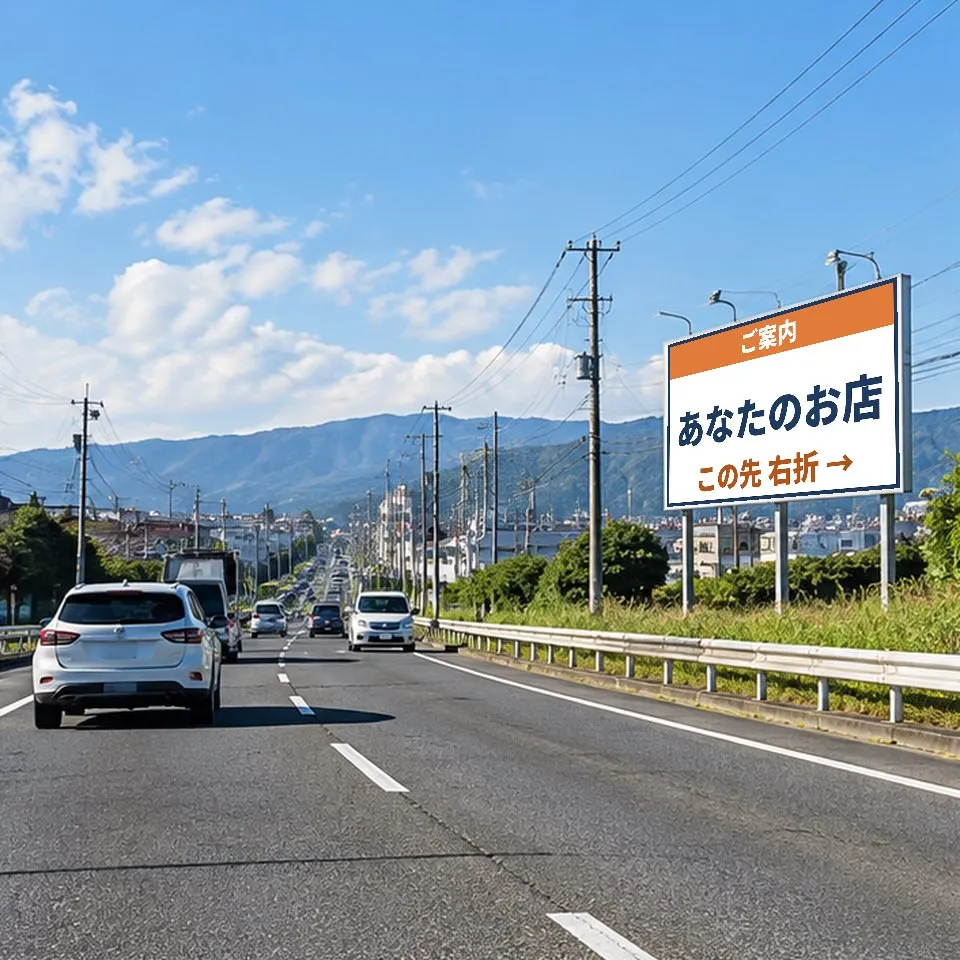
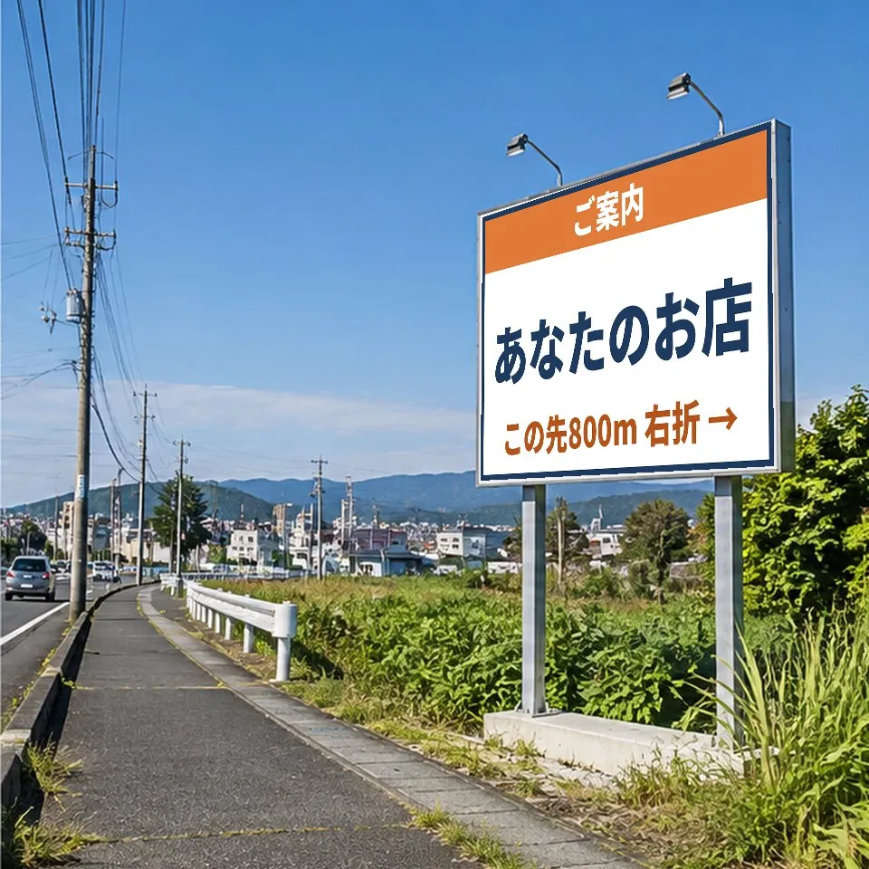

野立て看板
- 見る人
- 幹線道路を走る車
- 役割
- 店名を覚えてもらう、手前で予告する
- 費用の目安
- 月1.5万〜3万円＋製作費
空き枠と料金は看板ごとに照会します。
滋賀・京都の看板広告と開院集客
どこに出せる？ いくらかかる？ あなたのお店に合う方法を、無料でお調べします。
住所と業種を送るだけ。看板プランを無料でお届けします。
※看板の空き・価格・許認可は問い合わせ後に確認します。ご案内を保証するものではありません。

広告媒体のイメージ（実際の紹介可能な看板ではありません）候補地の地図、金額、設置イメージ、効果の測り方。並べて比べて、出すかどうかを決めていただけます。

候補B・Cも同じ形で並べて比べられます（金額は税別・仮定）
お客様が来る方向ごとに、看板を置く候補を地図で示します。
候補ごとに、月額・製作費・契約期間を並べて比べられます。
実際の場所に看板を置いた見え方と、業種のルールに沿った文面案です。
店名での検索や予約の数が、掲出の前後でどう変わったかで確かめます。
診断もプランの作成も無料です。看板を出すかどうかは、プランをご覧になってから決めていただけます。業種別の提案事例を見る クリニック向けプランの見本を見る
調べるのも、比べられる形にまとめるのも当社です。出すかどうかは、プランを見て決めてください。
フォームかLINEで、お店の場所と業種を送信。予算は未定でも構いません。
地図と道路の情報から、看板が向いているか、使えそうな広告の種類と予算の目安をお返事。
向いている場合、空きと料金を照会し、必要に応じて現地を確認。候補・金額・測り方を比較。
プランを見て、出す場合だけ看板会社と直接契約します。
看板の相談とプランは、どの業種の方も0円です。看板の掲載料と製作費は、看板会社へ直接お支払いいただきます。
看板の掲載料・製作費は、看板会社の見積もりを候補ごとにお見せします。当社は、広告契約が成立した場合に看板会社から紹介手数料を受け取ります。手数料率は提携先の看板会社ごとに差をつけない方針とし、どの看板をお勧めするかが手数料の多い少ないで変わらないようにしています。クリニック・歯科向けのそのほかの料金は専用ページで公開しています。
金額は一般的な目安です。実際の料金は看板ごとに異なり、ご相談のうえでお見積もりします。
元が取れる来店数の目安：
効果を保証するものではありません。土地の賃料などは看板会社の料金に含まれるのが一般的です。
5つの質問、30秒。答えると、看板の向き・不向きと、合いそうな広告の種類が分かります。結果はご依頼のフォームに添えて送られます。
簡易的な目安です。実際のご提案では、お店の場所を現地で確かめ、空いている看板と料金を調べてから判断します。
知られていなければ来店はなく、来店がなければ口コミは増えません。Googleマップや検索に出てくるのは、すでに探している人だけ。看板は、まだ探していない近所の人に毎日見てもらい、必要になったときに名前を思い出してもらえます。創業間もない私たち自身も、この「知ってもらう壁」を毎日実感しています。
通勤や買い物で同じ道を通る地元の方に、何度も目にしてもらえます。
「地名＋業種」の検索では他店と並べられます。店名や医院名で検索されれば、出てくるのはあなたのお店だけです。
マップの写真・営業時間や口コミの整え方をプランでお伝えし、看板で生まれた関心を取りこぼさないようにします。効果は、掲出前後の検索・予約の数の変化で確かめます。
看板の効果は、続けるほど積み上がります。当社は「すぐ効く広告」ではなく、地域で知られるお店になるための1年計画としてご提案します。
1つに決めなくても構いません。「遠くから名前を覚えてもらう」「最後の曲がり角で案内する」など、役割で組み合わせます。
空き枠と料金は看板ごとに照会します。
電柱の持ち主の承諾と、屋外広告物の許可が必要です。
許可、景観、建物の強度を先に確認します。
ご案内できる広告の種類は、地域の規制によって変わります。京都市は規制が特に厳しく、屋上の広告物は認められていません。費用の目安は一般的な相場で、実際の料金はご提案のときにお見積もりします。
お客様が来る方向、通う頻度、広告のルールは業種によって変わります。業種に合わせた計画をお作りします。
看板に加えて、Googleマップ・SNSの整備と運用、検索表示・経路検索・電話・予約の4つの数での報告まで。料金を公開しています。
医療広告規制・設置場所・初年度の回収に必要な新患数を確認する専用ページをご用意しました。
口コミで選ばれる時代になりました。けれど、口コミは、来てくれた人にしか書けません。知られていないお店には、口コミが生まれない。口コミが少ないお店は、マップで比べられて選ばれない。始めたばかりのお店ほど、この壁にぶつかります。だから最初に必要なのは、認知です。
ネットの口コミも、始まりはいつも泥臭いものです。通り道で名前を見てもらう。足を運んでもらう。来てくれた一人ひとりに、また来たいと思ってもらう。画面の中の星の数は、その積み重ねの結果でしかありません。看板は、その最初の一歩を担う、いちばん泥臭くて、いちばん確かな方法です。
これは、私たち自身のことでもあります。BRIDGE CYCLEは2026年3月に創業したばかりの会社です。どれだけ準備をしても、知ってもらえなければ相談は来ない。知ってもらうことの難しさを、いま一番実感しているのは私たちです。だからこそ、同じ壁の前に立つお店の力になりたいと考えています。
道路沿いには、空いたままの看板と、使われていない壁がある。毎日そこを通る近所の人に名前を覚えてもらえれば、検索され、来てもらえ、口コミが生まれる。空きはあるのに、届いていない。
空きを知るには看板会社に1社ずつ問い合わせるしかなく、いくらかかるのか、本当に効くのかも分からない。だから小さなお店ほど、看板をあきらめてきました。私たちは、これを終わらせます。
代表は商工会の経営指導員として約20年、500以上の開業と閉店に立ち会ってきました。BRIDGE CYCLEが掲げる「店じまいを、まちのはじまりに。」には、もう半分の意味があります。始めたお店を、続くお店にすること。トオリミチは、そのための事業です。
京都・滋賀の空いている看板と壁を、地元のお店の広告に。まず、大津と草津から始めます。
BRIDGE CYCLE株式会社 代表取締役 中村 裕二

BRIDGE CYCLE株式会社。代表の中村裕二は経営指導員として約20年、小規模事業者の創業・承継・廃業などを支援。認定経営革新等支援機関。看板会社と広告主の条件を整理し、適合する媒体の提案を支援します。
はい。お店の場所と業種がわかれば、当社がお客様の来る方向を調べ、空いている看板を看板会社に照会してから候補をお出しします。
当社への相談とプランは0円です。看板の掲載料と製作費は、候補ごとに看板会社の見積もりをお見せし、出すと決めた看板について看板会社と直接契約するときに決まります。
大津・草津・守山・栗東・野洲・湖南など、滋賀県内の幹線道路沿いを中心にご提案しています。京都府内も相談対象です。実際にご案内できるかは、希望場所の空き枠と規制条件の確認後にお伝えします。
いいえ。条件に合う看板を確認できない場合にも、相談・調査費用を別途請求しません。
掲出による集客効果を保証するものではありません。道路条件・費用等を比較し、広告主が判断できる情報を整理します。
許可の申請は、申請するご本人（看板会社が申請者になる場合を含みます）か、行政書士などが行います。当社は窓口のご案内や事前相談の日程調整などでサポートしますが、申請書や図面の作成・代理は行いません。サポートの費用はいただきません。
集客診断、詳細プランの作成、候補の照会と比較、Googleマップや口コミの整え方の助言、効果を測るための掲出前の数の記録、掲出3か月後の振り返り（1回）までが無料です。クリニック・歯科の方には、Googleマップ・SNSの整備と運用を有料で承っています（料金は専用ページで公開しています）。それ以外の業種のGoogleマップやホームページの運用代行、口コミ対策の継続的な運用は行わず、必要な場合は専門の会社をご紹介します。
実際の広告契約・広告料支払いは看板会社と直接行っていただく設計です。
お店の住所と業種がわかれば十分です。予算や開業日が未定でもご相談できます。
京都・滋賀の屋外広告を、探しやすく、活用しやすくします。目的に合わせてお選びください。